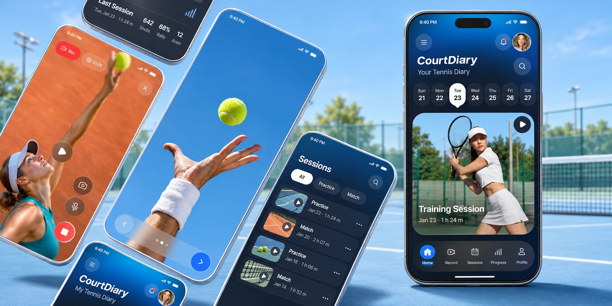

03 / EDGE AI & MOBILE · 个人独立全栈
TestFlight 真机球友实测中
Court Diary
场上不必盯屏标记好球，赛后先筛选候选片段，再按需增强球轨迹。
85%+
Stage 1 声纹粗剪滤掉捡球垃圾时长
≤ 3 次
从按住收工到发微信朋友圈的核心点击
1s 切片
高光窗每秒切片跑 GridTrackNet 防 OOM
可关闭 AI
关闭所有 AI 开关，盲操出片主路径依然完整
- 角色
- 个人独立全栈：产品交互、iOS / Watch 开发及声音与视觉模型训练
- 应用形态
- iOS + Apple Watch 协同应用（TestFlight 实测中）
- Stage 1 声纹粗剪
- 自训声纹网络（混响 + 喘息抗噪增强 + 近场能量双门控）
- Stage 2 轨迹精修
- 每秒切片 + 后训练 GridTrackNet + 刚体运动学抛物线平滑

点击放大项目背景 & 业务目标
打球时手湿、强光下难看屏幕；赛后从 90–120 分钟录像里寻找好球又很费时间。目标是场上不用盯屏标记，赛后以不超过 3 次核心点击分享片段。
这是个人独立产品与开发项目，负责 iOS / Apple Watch 交互、开发及声纹和视觉模型训练；目前处于 TestFlight 实测。
问题分析 & 需求挖掘
问题不只是剪辑按钮太多：现场无法精确操作，而长录像里大量是捡球等非比赛时间。
若对整场视频逐帧做球轨迹识别，手机发热和内存压力过高。因此先缩小需要处理的视频范围，再精修选中的片段。
方案设计 & 核心权衡
场上用大面积操作区、手表触觉反馈和声音辅助标记；赛后先用声音寻找候选片段，再对保留片段识别球轨迹。
录制期间不运行视觉识别，优先保证录制稳定；赛后先给用户粗剪结果，轨迹增强在后台处理。模型提供候选，用户仍可选择，关闭 AI 后保留基本出片路径。
 点击放大
点击放大
 点击放大
点击放大
落地推进 & 风险处理
先验证场上记录，再训练声音筛选和轨迹识别，逐步放到 TestFlight 真机体验。
干净环境训练的声音模型会受球场噪声和隔壁口令干扰，因此补充球场噪声与喘息样本；原有轨迹模型面对底线视角的小球和白线容易误判，于是补充困难样本并用运动规律过滤异常轨迹。
结果数据 + 复盘
现有项目记录显示声音粗剪可滤掉 85% 以上捡球等时长，核心分享流程设计为不超过 3 次点击；这些不是大规模用户效果数据。
分阶段处理让端侧计算更可行，先保证录制和人工选择也降低了模型失效的影响。双打多声纹和不同场地、光照下的识别仍需继续验证。
下一个项目 · 04 / 05
rstack — 自进化 AI 编程工作流 →
Claude 负责决策与契约、Codex 负责侦察与施工；配合每周复盘与反事实重放，连续四期追踪 W45–W47。